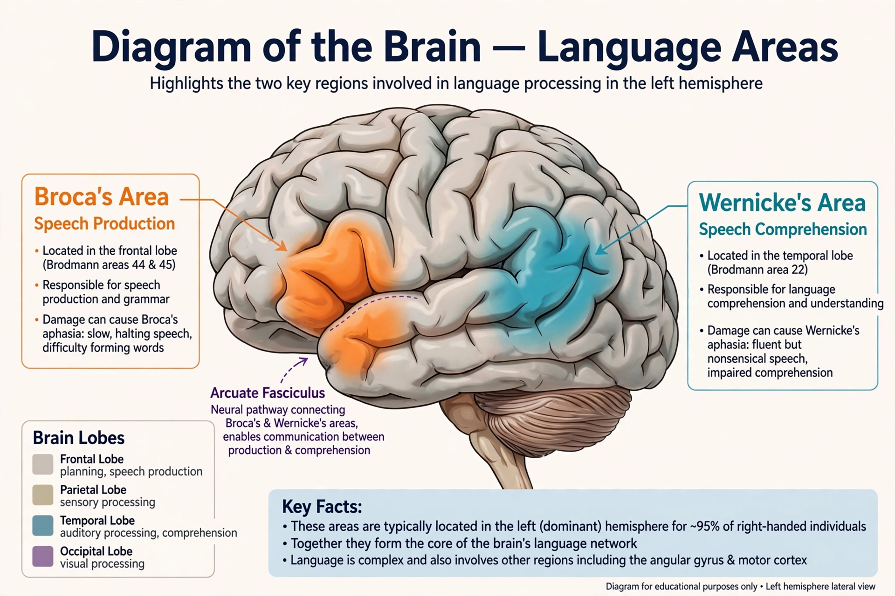

| Aphasia | |
|---|---|
| Specialty | Neurology, speech-language pathology |
| Usual cause | Stroke; also head injury, tumour, dementia |
| Main types | Broca's, Wernicke's, global, anomic, conduction |
| Treatment | Speech and language therapy |
Aphasia is an acquired disorder of language caused by damage to the parts of the brain that process language — most commonly a stroke in the dominant (usually left) hemisphere. It impairs speaking, understanding, reading and writing in varying combinations, while leaving general intelligence largely intact. Aphasia affects roughly a third of stroke survivors.

In Broca's (expressive) aphasia, from damage to the frontal operculum described by Paul Broca in 1861, speech is effortful, halting and telegraphic, though comprehension is relatively preserved and patients are painfully aware of their deficit. In Wernicke's (receptive) aphasia, from posterior temporal damage described by Carl Wernicke, speech is fluent but empty or nonsensical and comprehension is poor. Global aphasia follows massive damage and severely impairs all language functions; anomic aphasia is dominated by word-finding difficulty; conduction aphasia specifically impairs repetition. Primary progressive aphasia arises from neurodegenerative disease.
Assessment by a speech-language therapist maps the pattern of deficits. There is no drug cure; therapy — exercises, compensatory strategies, group and computer-based practice — produces modest but real gains, greatest when begun early and delivered intensively. Recovery continues for months to years as the brain reorganises.
Broca's area · Wernicke's area · Stroke · Language acquisition